The Vault & The Long Game
Act 5b + Act 6 · 31 illustrations
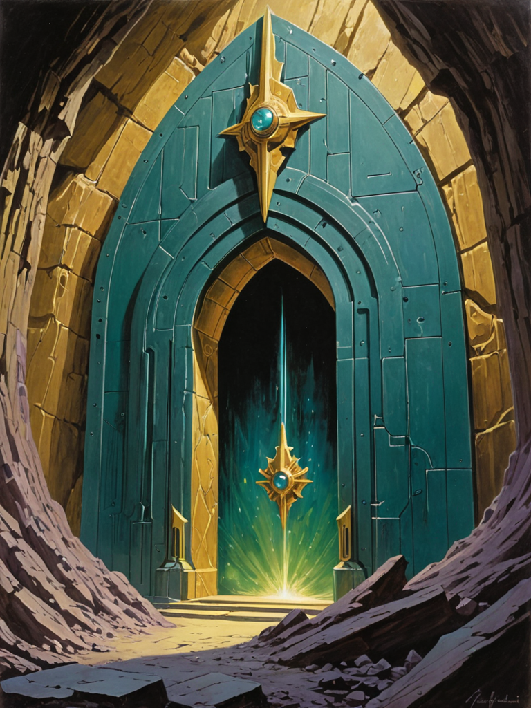
The Foundation Model (CIP-trained, M28+) continuously identifies technical specifications of facts that are not true yet — precise, structured descriptions of knowledge that doesn't exist but whose absence is detectable from the topology of what does exist. Each gap is priced by the protocol on two axes: rarity × utility.
This Gap Feed is the product. It is visible only to club members. The Foundation Model's contents are never released. The club is the monetization.
§ 1. What It IsSwiss Stiftung (Foundation). Separate legal entity from SSK Corp. Purpose-locked under Swiss law.
Modeled on the intersection of:
· Bell Labs — fundamental research institution
· DARPA — directed research via precise technical specifications
· Gates Foundation — global impact, philanthropic governance
SSK Corp's role: Donates unfettered, free, secure access to the Foundation Model. Receives $0 in return. SSK Corp benefits indirectly — every bounty-funded .kasset that enters the public marketplace generates progressive certification fees via the certification service.
§ 2. Legal Structure"Apex decision maker" — quantified threshold: Individuals whose decisions directly govern >$100B in capital or >100M people. Includes untracked dynastic and family wealth not visible on public billionaire lists.
§ 3. MembershipDelivered through the member's existing twin. Same architecture as every other Sovereign user. Same device. Premium security features only. No separate terminal. No separate hardware. The architecture — minus the public availability of the market — is the exact same thing.
Each gap is a technical specification of a fact that isn't true yet: a precise description of knowledge whose absence the Foundation Model has detected, priced by rarity and utility.
§ 4. The Gap Feed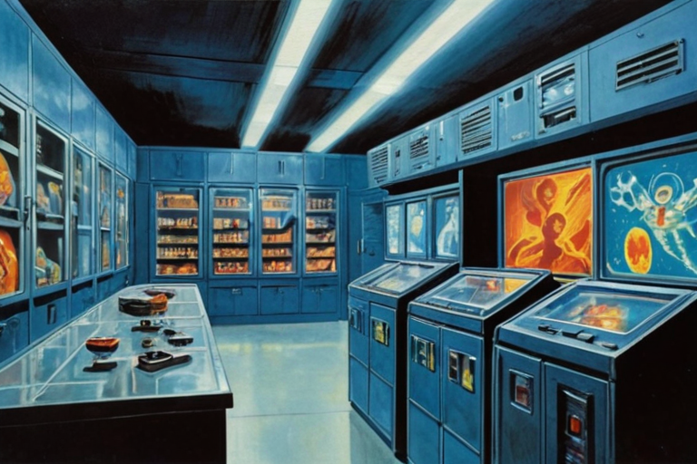
Bounties are separate from the membership fee. The membership buys access to the Gap Feed. The bounty is a separate payment from the buyer that funds the creation of the knowledge.
Flow
Bounty Targeting
The FM identifies candidates using:
When the FM determines no single user is likely to succeed alone, it proposes a Swarm Contract bounty — targeting 2-3 complementary users to work collaboratively.
Excluded signals: Minting velocity. Prior bounty completion record. Peer demand. These are not used in targeting.
§ 5. The Bounty System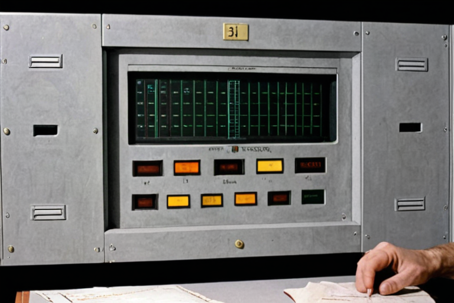
Maximum access window: the shorter of the two participants' lifetimes.
When either the buyer or the minter dies, the .kasset releases to the public marketplace. The minter's death triggers Rule 1 (factual knowledge enters the Common Knowledge Codex). The buyer's death terminates the exclusive access.
Properties
The billionaire and the researcher become mutual life insurance policies. In a world where power historically eliminates threats, this system converts the relationship between apex capital and frontier knowledge into a mutual non-aggression pact enforced by economics.
§ 6. The Lockup Rule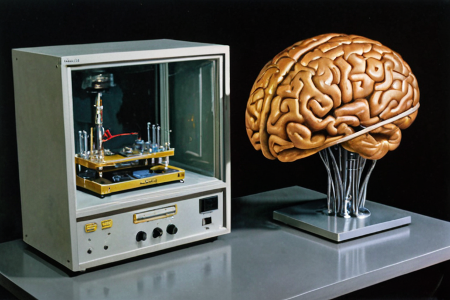
Buyer cartels, government weaponization of intelligence, and deals conducted outside the system are acknowledged as consequences of nature — not structurally prevented.
The primary enforcement mechanism is the seat itself. The Gap Feed is the most valuable predictive intelligence on the formation of new human knowledge. Thousands of qualified buyers exist for ~100 seats. Violation of the rules = permanent expulsion. No reinstatement. The seat goes to the next qualified buyer. The opportunity cost of losing the seat dwarfs any single act of rule violation.
The anti-suppression mechanism is the lockup rule. Knowledge cannot be buried indefinitely. Death enforces release. The shorter of the two lifetimes guarantees it.
§ 7. Anti-Collusion Posture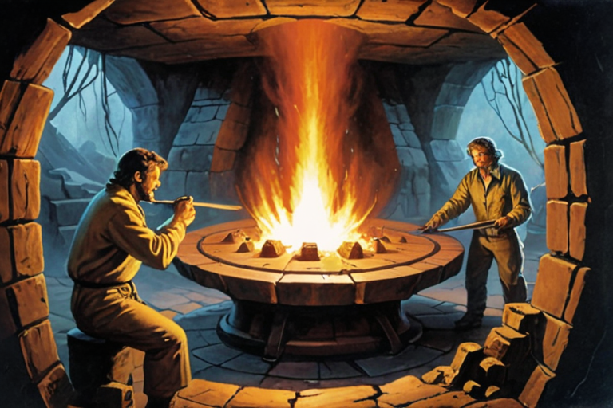
The Foundation Model generates revenue without releasing its contents. The Stiftung operates the Gap Feed. The Corp operates the marketplace. The minters create the knowledge. The buyers fund it.
§ 8. Revenue Model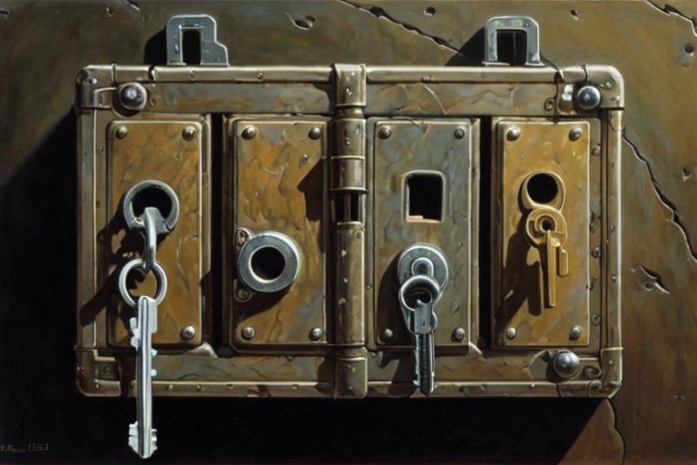
The principle: apex capital funds the conditions for intelligence formation at the base. The money flows down.
A. Moonshot Funding (Google X Model)
The FM identifies gap constellations — clusters of interconnected knowledge voids that, if resolved together, solve a civilizational problem. "End malaria" is not one gap. It's 50 interconnected gaps across epidemiology, drug delivery logistics, cold chain management, mosquito genomics, public health infrastructure.
The Stiftung funds the entire constellation as a Swarm Contract bounty (see doc 20, IP Inventory: "Algorithmic orchestration of 20+ interlocking human contributions into a single cryptographic contract"). The Swarm Contract DAG manages interdependencies and payout sequencing. The FM orchestrates targeting across all sub-bounties simultaneously.
Sustainable fusion is the first and largest moonshot. The Stiftung funds the research that produces the energy source that powers the institution that funds the research. If it works, the σ loop closes completely.
Resolved moonshot .kassets enter the public Codex immediately — no buyer lockup. The moonshot program recruits a caliber of minter that no sticker drop or Genesis Grant will attract: people who want to work on problems that matter.
§ 1. Fund Deployment Categories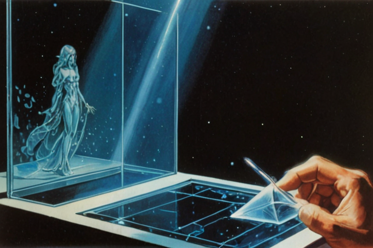
The entire campus is a library that creates its own contents.
2.1 Main Campus: Wears Valley, East Tennessee
Location: Connected parcels of large acreage in the Wears Valley / Townsend corridor, near the entrance to Great Smoky Mountains National Park. Wears Valley (Wear Cove) runs parallel to the park between Chilhowee Mountain to the north and the park boundary to the south. The western end opens toward Townsend ("the peaceful side of the Smokies"). The Metcalf Bottoms park entrance is directly accessible.
Jurisdictional note: Wears Valley spans Sevier County (east, toward Pigeon Forge) and Blount County (west, toward Townsend). Large acreage in Blount County has fewer STR-driven zoning restrictions and more agricultural/open land use. The western Wears Valley / Townsend side is the primary acquisition target.
Scale: 300-500+ acres. Apple Park is 175 acres / 2.8M sq ft / $5B / 12,000 capacity. The Sovereign campus is larger and more complex — it contains a boarding school, graduate program, research labs, corporate R&D, performance venues, and an arboretum. 500 acres allows the Swarthmore integration model: buildings embedded in the arboretum, not the arboretum surrounding buildings.
Campus design references (post-Fallingwater):
§ 2. The Sovereign Campus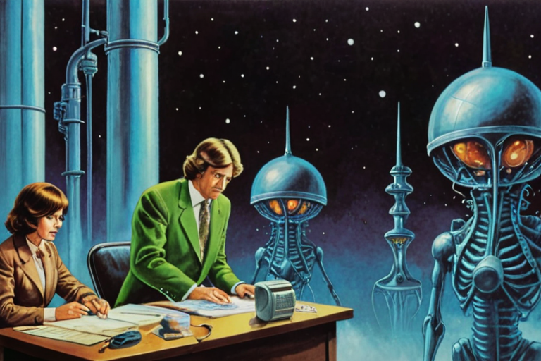
All four deployment categories form a single system:
The Stiftung is the circulatory system. Apex membership fees pump capital from the top to the base. The base produces minters. Minters fill gaps. Filled gaps validate the Gap Feed. The Gap Feed justifies the memberships. The memberships fund the Stiftung. Closed loop.
§ 3. Connective PipelineThis document covers Line of Business #1: The Apex Oracle and its downstream infrastructure (the Stiftung).
Both Y3 business lines are now fully documented.
§ 4. Thread Summary — Where We Are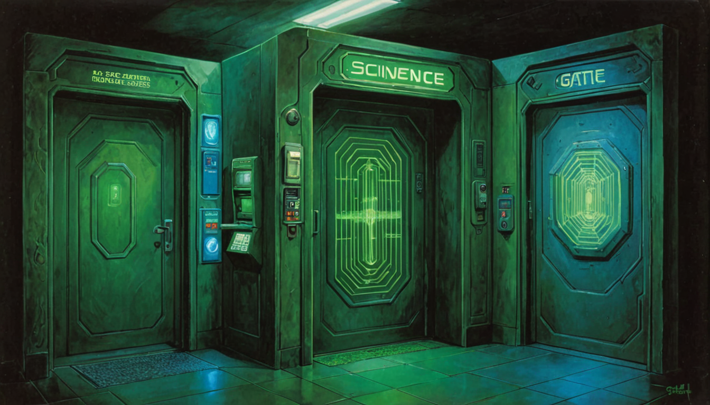
The vault is a cryptographically secure storage space on the user's personal device. The owner is the only person permitted to open, store, and lock it. The vault is an extension of the owner's mind — a digital container for personal writing, expression, reasoning, and acquired knowledge. Its contents are protected under the 1st Amendment (expression), 4th Amendment (papers and effects), and 5th Amendment (testimonial privilege). Neither the company, the government, nor any third party has a legal right to the contents.
§ §0.1 Core Axiom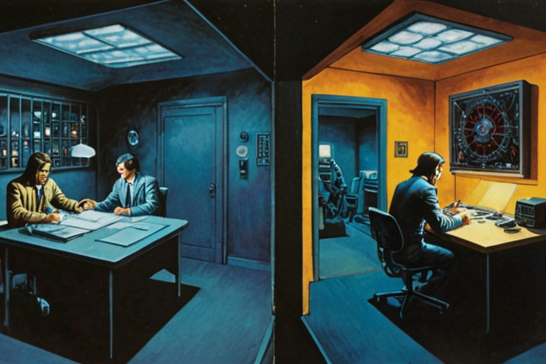
· Cipher: AES-256-GCM (authenticated encryption)
· Signing: ML-DSA-65 (post-quantum, NIST FIPS 204)
· Key derivation (active vault): vault_key = Argon2id(passphrase) ⊕ HSM_key. Both the user's passphrase and the device's hardware security module key are cryptographic inputs. Neither alone is sufficient. Compromise of one factor does not compromise the vault.
· Key derivation (backup): backup_key = Argon2id(passphrase) ⊕ BackupEnclave_HSM_key. The Home Backup Enclave contains its own HSM. Backup encryption is two-factor: passphrase + physical possession of the Backup Enclave.
· Argon2id minimum parameters: Memory cost ≥ 256 MiB, iterations ≥ 3. On platforms without HSM (software fallback), memory cost ≥ 512 MiB and iterations ≥ 4 to compensate for single-factor. These are minimums — implementations should tune higher based on device capability.
· Passphrase complexity: Minimum 40 bits of entropy enforced at setup (approximately 4+ random words or 8+ mixed characters). User's choice beyond the minimum.
§ §0.2 Encryption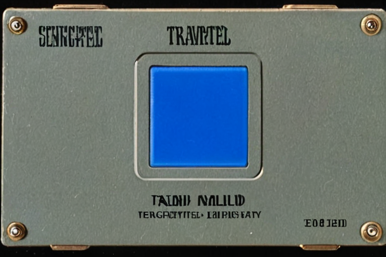
Reproducible builds. The vault layer is open-source. Deterministic compilation allows any auditor to verify the distributed binary matches the published source. Coerced software updates are publicly detectable.
Platform constraint (documented honestly): Some distribution channels re-sign binaries (e.g., app stores). The reproducible-build guarantee applies to the open-source artifact and direct-distributed builds, not to re-signed distribution channel binaries. Auditors can verify via direct-distributed builds.
Update integrity: All software updates MUST be verified against an EdDSA signature before installation. The signing public key is embedded in the vault binary at build time. A valid signature proves the update was produced by the company's build pipeline. An invalid or missing signature rejects the update. This is a vault-layer requirement — the vault process verifies updates before applying them.
§ §0.3 Source Code IntegrityCompartment A — Sovereign Space (Self-Created)
Everything the owner made, wrote, recorded, thought, or trained. Contains three critical components:
The Idiolect — the user's unique semantic map. A learned mapping function that translates tau profiles (process dynamics) into semantic weight space. The idiolect IS the user in computational form. It is trained from the user's language, writing, behavior, and decisions. It is the key that makes tau values meaningful. It never leaves the vault.
The Tau Collection — the user's cognitive dynamics. Process descriptors: how fast the user decides, how they hesitate, their rhythms across cognitive domains. Without the idiolect: an unlabeled bag of numbers. With the idiolect: the user's personality.
Raw Content — journal entries, messages, health data, personal facts. PII-stripped before reaching the training pipeline. The idiolect is trained FROM this content, but the content is consumed during training and not stored in recoverable form.
· Constitutional basis: 1st Amendment (expression), 5th Amendment (testimonial privilege)
§ §0.4 Two-Compartment ArchitectureTwin Computation Model
The "LoRA weights" in this architecture are not static weight matrices. They are the output of the Idiolect function applied to the tau collection. The weights are computed at runtime, not stored. The idiolect is the generator. The taus are the inputs. The weights are ephemeral — they exist only during active inference, recomputed each time the idiolect is loaded.
What the Idiolect Is (Implementation)
The idiolect is a learned mapping function — concretely, a small hypernetwork that:
Takes surface tau parameters as input (observable signals — see Doc 03 §3)
Outputs weight modifications (ΔW) for the base model's layers
§ §0.5 The Idiolect Architecture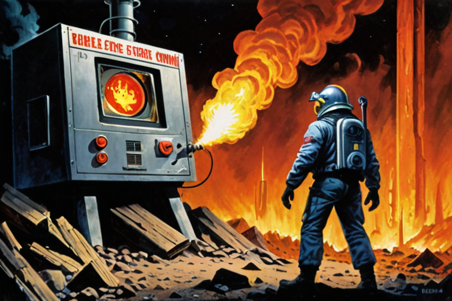
No biometric authentication at the SSK layer. Device OS-level biometric auth is the user's choice and the platform's domain. SSK does not implement, require, or store biometric data for vault authentication.
Auth flow: Device OS auth → SSK passphrase → vault_key = Argon2id(passphrase) ⊕ HSM_key
High-stakes operations (mint, trade, export): passphrase re-confirmation + HSM-bound TOTP (6-digit rotating code, seed in hardware security module). Anti-remote-theft measure — protects against passphrase-only compromise from a different device. Not an anti-state measure.
§ §0.6 Authentication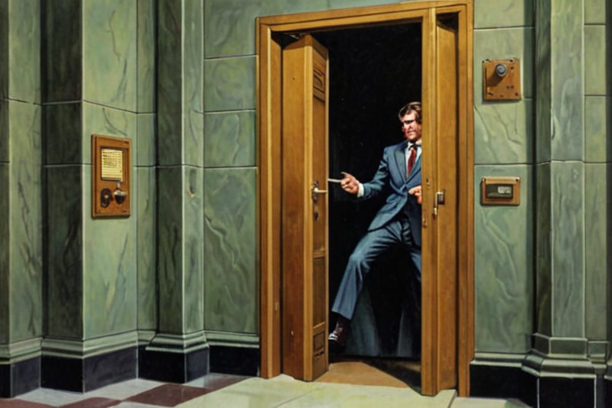
Locking Principle: Foreground Exclusivity
The vault is open if and only if SSK is the active foreground application on an unlocked screen. The vault locks when either condition breaks:
· Screen turns off → vault locks
· App leaves foreground → vault locks
· Device locks → vault locks
One rule. No sensor dependency. No attention inference. Re-access requires passphrase.
§ §0.7 Session and Lock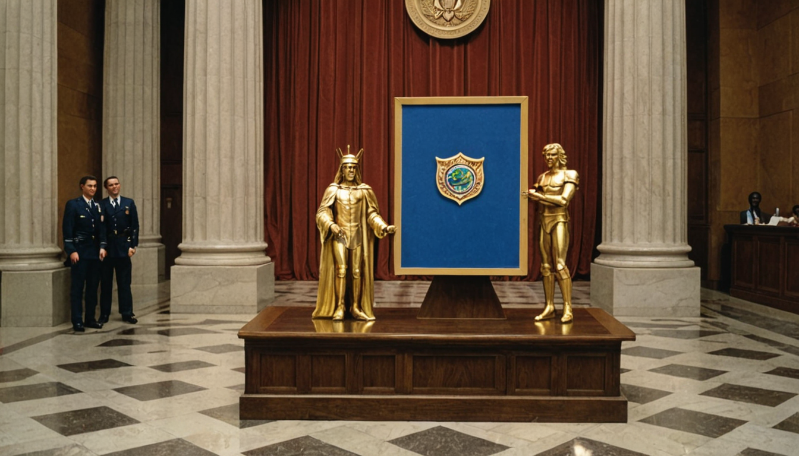
New device with conforming HSM
Install SSK (reproducible build — verifiable)
Connect Home Backup Enclave (two-factor encrypted backup)
Enter passphrase
Backup decrypted via Argon2id(passphrase) ⊕ BackupEnclave_HSM_key
New HSM key generated on new device; vault re-encrypted under new device HSM + passphrase
§ §0.8 RecoveryOpt-in security feature. User activates at their own discretion and assumes all liability.
A second passphrase that, when entered, executes atomic, irrevocable destruction of all active vault contents:
HSM key zeroed
Encryption keys overwritten with random data
All data in both compartments overwritten (including Idiolect and Tau collection)
Operation is atomic — cannot be interrupted or rolled back
§ §0.9 Burn CredentialThe company is a vault manufacturer. It distributes encrypted local software. Safe manufacturers are not liable for what's stored in their safes. The company has no ability to inspect vault contents and no obligation to do so.
§ §0.10 Container Liability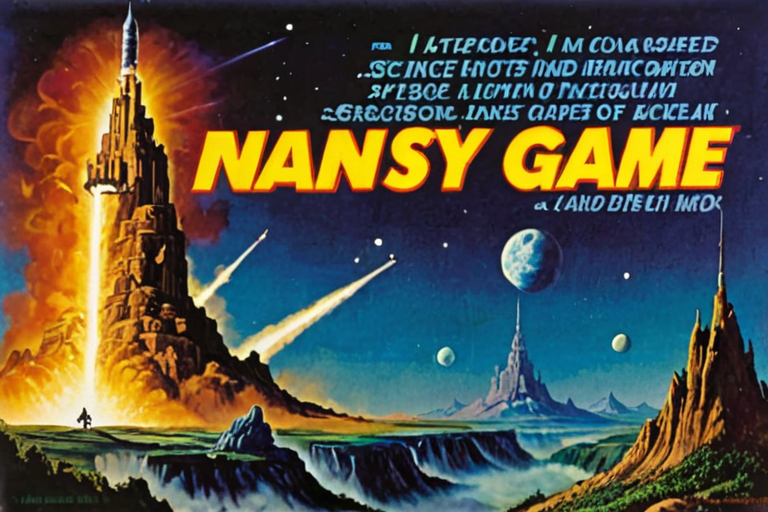
The vault is designed so the company cannot access user data, even under compulsion. This follows from the 1st, 4th, and 5th Amendments. The company does not possess user keys. The KDF architecture requires both the user's passphrase and the device's HSM key — the company has neither. Reproducible builds prove no backdoor exists.
§ §0.11 Warrant-Proof Design PositionThis section is the complete specification of what the vault protects, how it is protected, and what is intentionally left unprotected. Any data not listed here does not receive vault-level encryption. This is the canonical reference for implementors.
Protection Class 1: Encrypted At Rest
Data encrypted with vault_key via AES-256-GCM. Stored on disk. Accessible only when vault is open (foreground, authenticated). Organized by compartment.
Compartment A — Sovereign Space (1st + 5th Amendment)
Compartment B — Acquired Space (4th Amendment)
Protection Class 2: Purged From Memory On Vault Lock
§ §0.15 Encryption InventoryThe Problem
The vault layer is open source (Doc 29 §8). The intelligence layer is proprietary. If both run in the same address space, the proprietary code can read anything in memory — including the decrypted idiolect, the vault_key, and all Class 2 data. During normal operation (not minting), the application has network access (web server, BLE, trade settlement). A supply chain attack on the proprietary binary could exfiltrate the idiolect while the user believes the open-source vault is protecting them. The open-source vault is meaningless if untrusted code shares its address space with network access.
The Requirement
The intelligence module and the vault module MUST run as separate operating system processes. This is not optional. Shared-address-space architectures violate the trust model.
Sandbox Enforcement
The intelligence process MUST be sandboxed by the operating system's kernel-level isolation mechanism. The sandbox MUST deny:
§ §0.16 Internal Trust Boundary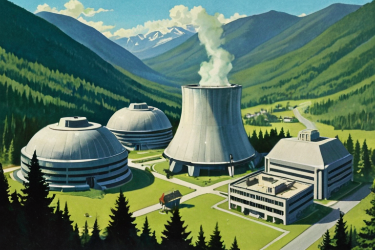
The Problem
The idiolect and conversation context (Class 2 data) must be zeroed from RAM on vault lock. In C, memset_s() / SecureZeroMemory() / explicit_bzero() guarantee the compiler cannot elide the write. In Python (the intelligence process), the garbage collector does not guarantee when memory is freed. del removes the reference. The allocator may reuse the page. But the old bytes persist until overwritten.
Additionally: numpy arrays may create internal copies. Python string interning caches small strings indefinitely. Slicing creates views that share underlying memory.
The Requirement
All Class 2 data in the intelligence process MUST be stored in C-allocated memory (via mmap, ctypes.create_string_buffer, or numpy arrays backed by mmap). Python references point into this memory but never copy it into Python-managed objects (strings, bytes literals, lists).
Swap prevention: All Class 2 buffers MUST be locked into physical RAM (prevented from being paged to disk) immediately after allocation. Without this, the OS may write the idiolect to the swap partition or pagefile, where it persists after memory purge and is recoverable via disk forensics. If the OS declines the lock request (insufficient privilege or resource limits), the vault MUST warn the user that swap protection is unavailable. See platform implementation guides for per-platform memory-locking mechanisms.
§ §0.17 Memory Purge SpecificationScenarios
Procedure (Atomic Re-Keying)
User authenticates with current vault_key (old passphrase + old HSM)
Vault contents decrypted into RAM (Class 2 window)
New HSM key generated (on new hardware or via PKCS#11)
New vault_key computed: Argon2id(new_passphrase) ⊕ new_HSM_key
The Rule
If the application cannot determine its foreground state, it MUST treat the state as "not foreground" and lock the vault. Fail-safe, not fail-open.
Platform Signal Mapping (Reference)
The following table maps the abstract requirement ("foreground lost" / "screen locked") to the concrete OS signal on each supported platform. These are included in the reference design because the signal names define what CONSTITUTES foreground loss — a design constraint, not merely an implementation detail.
Screen Lock Detection (All Platforms)
Foreground loss from app switching is detected by the primary signal. Screen lock (device locked by user or timeout) is a SEPARATE signal that also triggers vault lock:
§ §0.19 Foreground Detection Failure ModeThe Sovereign Survival Kit builds personal vaults, hands the only key to the owner, and certifies the provenance of what comes out. The company never holds the key. It cannot open the vault, inspect the contents, or decide what goes in. Once the owner locks the door, the contents are sovereign — protected by the same constitutional principles that protect a person's papers, thoughts, and private effects.
This architecture has a direct consequence for content enforcement: The company controls two boundaries — the minting mechanism (what enters the tradeable format) and the certification stamp (what gets certified). It does not control what the owner stores, writes, or creates inside their own vault. Content enforcement therefore operates at layer boundaries, not at the content layer.
§ §1. Constitutional Principle